Sobre el Proyecto
La paleontología es una disciplina científica que estudia la historia de la vida en la Tierra a
través de los fósiles, proporcionando una ventana única hacia los ecosistemas y la
biodiversidad de épocas pasadas. En regiones como Chile, Argentina y la Antártida, los
hallazgos fósiles ofrecen una oportunidad invaluable para estudiar la evolución de las
especies y los ecosistemas.
Según Alexander Vargas, director de la Red Paleontológica de la Universidad de Chile, en un
reportaje de La Tercera, Chile posee episodios únicos en la evolución del planeta, dados por
su geografía, que aún permanecen en gran parte sin ser revelados. Sin embargo, a pesar de
la relevancia científica de estos hallazgos, la paleontología ha sido un área del conocimiento
subestimada en Chile, tanto a nivel académico como en términos de inversión en
investigación.
Reportaje
Una de las bases fundamentales de este proyecto es la teoría de la deriva continental, la cual
sostiene que los continentes actuales no siempre han estado en las mismas posiciones. Hace
millones de años, Sudamérica, la Antártida y otras regiones formaban parte del
supercontinente Gondwana. A medida que estos enormes bloques de tierra se desplazaban
sobre la superficie terrestre, las especies que los habitaban también migraban y se adaptaban
a los cambios geográficos y climáticos
Los fósiles encontrados en Chile, Argentina y la Antártida nos brindan una oportunidad única
para estudiar cómo estaba conectada la vida entre estas regiones en el pasado. Al identificar
y analizar estos fósiles, podemos reconstruir la historia de cómo especies como dinosaurios,
plantas o moluscos migraron y evolucionaron en respuesta a los movimientos tectónicos. Este
análisis nos permitirá entender mejor los patrones biogeográficos y las conexiones ecológicas
entre estas áreas durante diferentes períodos geológicos.
El propósito de este análisis es generar un mejor entendimiento de los patrones
biogeográficos y evolutivos de estas regiones, además los resultados podrían servir para:
- Identificar conexiones geológicas y biológicas entre las tres regiones durante distintos
periodos geológicos.
- Contribuir a la conservación del patrimonio fósil y generar conciencia sobre la
importancia de preservar las áreas ricas en fósiles.
- Apoyar la educación paleontológica, ofreciendo datos visualizados que pueden ser
utilizados para ilustrar la evolución y los cambios en la biodiversidad de estas regiones.
La Historia de la Vida en Fósiles: Chile, Argentina y la Antártida
Introducción
Explorar la biodiversidad fósil nos permite entender cómo evolucionaron los ecosistemas del pasado y cómo las condiciones geológicas y climáticas moldearon la vida en diferentes regiones. Este proyecto analiza los fósiles de Chile, Argentina y la Antártida, enfocándose en las especies más comunes, sus ambientes y cómo estas regiones están conectadas a través del tiempo.
Especies Más Comunes: Un Vistazo Regional
Chile
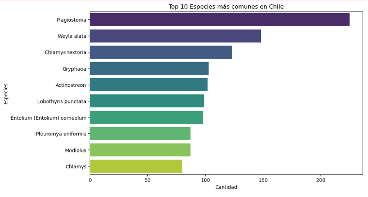
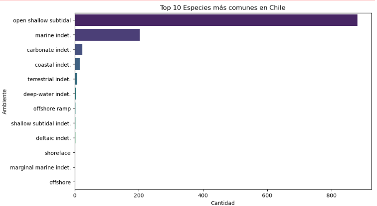
Este gráfico destaca la importancia de los ecosistemas acuáticos en la preservación fósil chilena.
Argentina
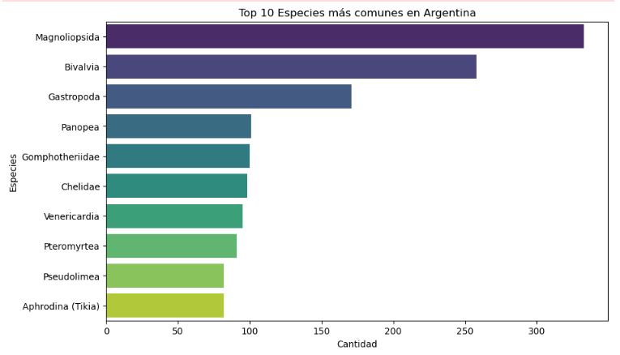
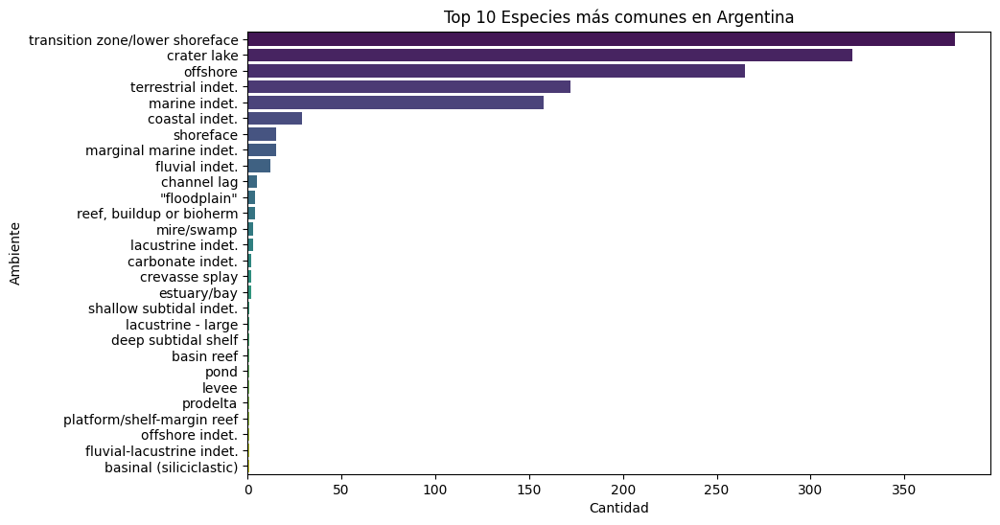
Ambientes fluviales y terrestres tienen una representación significativa en los fósiles argentinos.
Antártida
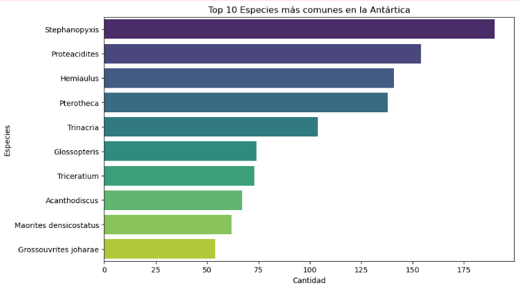
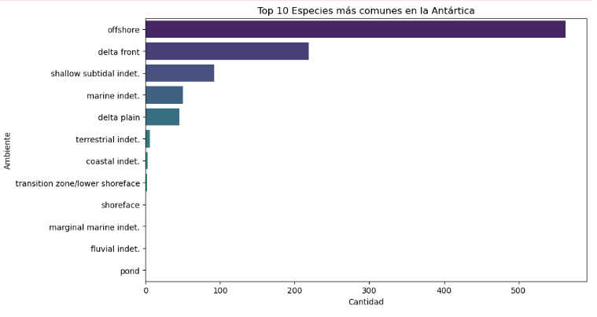
Ambientes como 'marginal marine indet.' y 'offshore' destacan en los fósiles de esta región polar.
Comparación Taxonómica y Temporal
Comparación Taxonómica
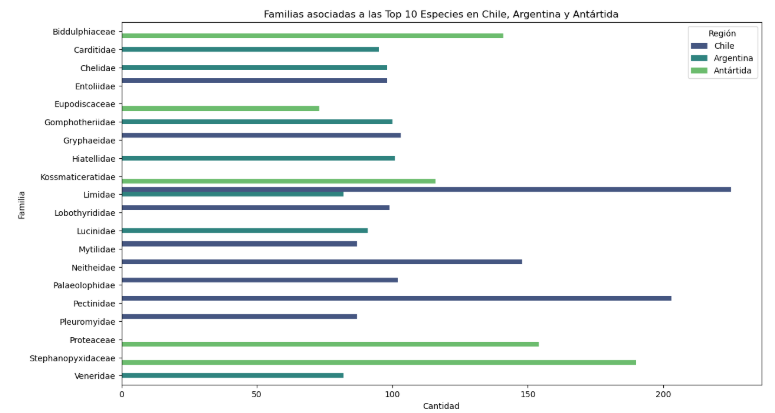
Se observa una conexión taxonómica entre regiones, como la familia Limidae compartida entre Chile y Argentina.
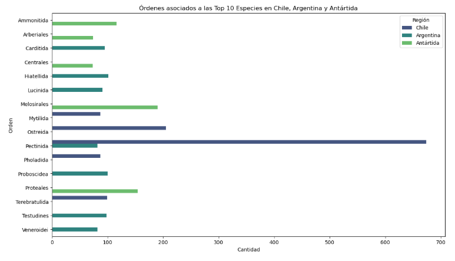
Órdenes como Pectinida destacan por estar presentes en más de una región, reflejando conexiones evolutivas.
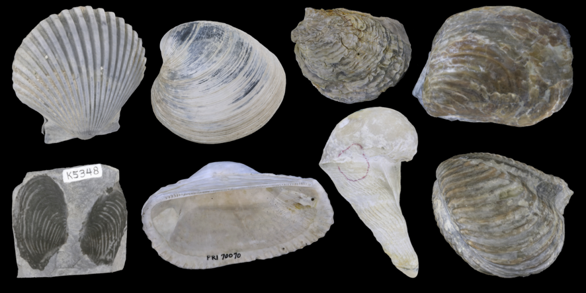
Comparación por Era Geológica
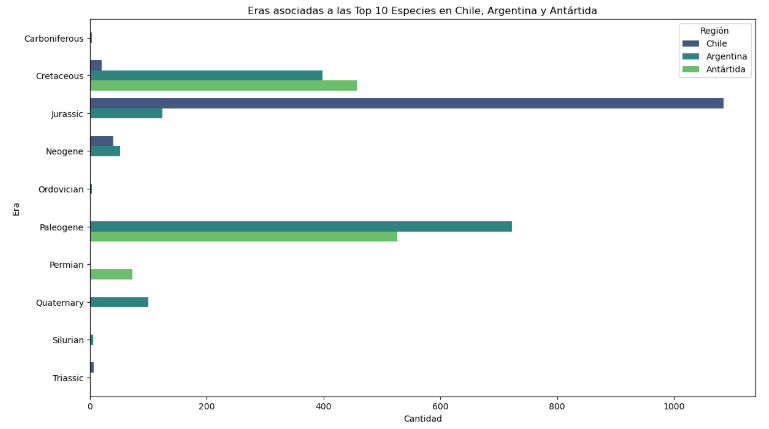
Conclusión
Los fósiles analizados en Chile, Argentina y la Antártida revelan un predominio de ecosistemas acuáticos, con ambientes como marine indet., offshore, y open shallow subtidal destacando en las tres regiones. Esto subraya la importancia de los ecosistemas marinos y transicionales en la preservación fósil y su rol crucial en la evolución de la biodiversidad.
A pesar de estas similitudes, cada región también refleja su singularidad. Argentina muestra una diversidad destacada en ambientes continentales y terrestres, mientras que Chile está marcado por una clara dominancia de especies marinas. Por su parte, la Antártida, aunque con menos registros, presenta un balance entre ambientes marinos fríos y costeros.
El análisis también revela conexiones importantes entre las regiones. Órdenes como Pectinida, compartidos entre Chile y Argentina, y el phylum Mollusca, presente en todas las regiones, reflejan vínculos geológicos y biológicos que se remontan a la época del supercontinente Gondwana. Además, el Cretaceous emerge como una era clave que conecta la biodiversidad de estas áreas, destacando su relevancia en la historia evolutiva compartida.
En conjunto, estos hallazgos ofrecen una visión fascinante de cómo las características geográficas, climáticas y geológicas han moldeado la biodiversidad fósil de cada región, mientras mantienen la conexión histórica entre ellas.
Diferencias y Similitudes en la Biodiversidad Fósil Entre Regiones a lo Largo del Tiempo
Introducción
A través de las eras geológicas, Chile, Argentina y la Antártida presentan patrones únicos y conexiones fascinantes en su biodiversidad fósil. Los índices de Shannon y Simpson nos permiten analizar la riqueza y equitatividad taxonómica en niveles que van desde especies hasta filos, revelando cómo las condiciones ambientales y geológicas moldearon estas regiones.
Eras Dominantes en Biodiversidad
Chile
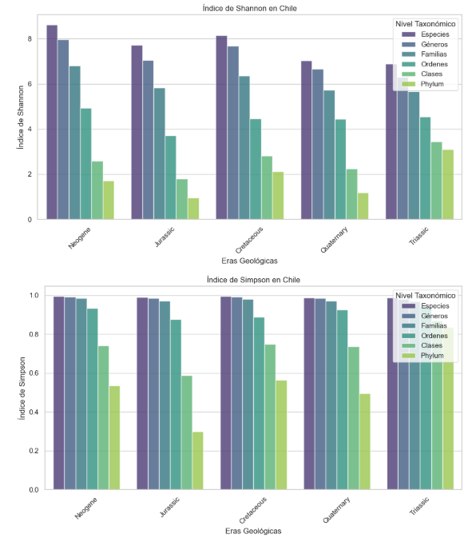
El **Neogene** destaca como la era más diversa en Chile, con altos índices de Shannon que reflejan una rica biodiversidad bien distribuida.
Argentina
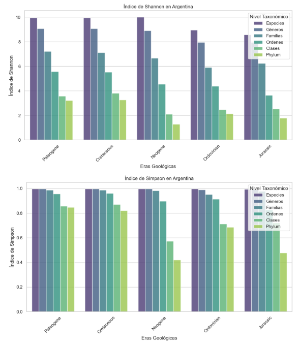
En Argentina, las eras **Paleogene** y **Cretaceous** lideran en diversidad, especialmente en especies y géneros, destacando ecosistemas ricos y balanceados.
Antártida
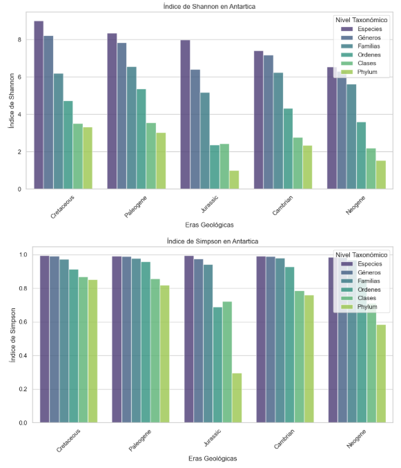
La Antártida resalta en el **Cretaceous** y el **Paleogene**, mostrando alta diversidad y equitatividad, mientras que el **Neogene** tiene patrones más limitados.
Impacto y Generalidades Evolutivas
- Las altas concentraciones de fósiles en ciertas eras, como el **Neogene**, el **Paleogene** y el **Cretaceous**, reflejan ecosistemas particularmente favorables para la vida debido a condiciones climáticas y geológicas específicas.
- Los índices elevados de Shannon y Simpson destacan la importancia de estas eras en la biodiversidad fósil. A medida que se asciende en niveles taxonómicos, la riqueza disminuye naturalmente, pero los datos revelan patrones consistentes en todas las regiones.
Conclusión
El análisis revela que cada región tiene eras dominantes en biodiversidad, moldeadas por factores geográficos, climáticos y evolutivos. Los índices de Shannon y Simpson no solo muestran diversidad potencial, sino también patrones temporales y geográficos clave que conectan estas áreas a lo largo de la historia de la vida.
La Evolución Fósil a Través del Tiempo en Chile, Argentina y la Antártida
Introducción
La distribución de especies fósiles a través del tiempo y el espacio ofrece una visión única sobre cómo los ecosistemas han evolucionado y cambiado a lo largo de eras geológicas. Este análisis explora cómo las especies fósiles están distribuidas en Chile, Argentina y la Antártida, identificando las regiones y períodos con mayor riqueza fósil, y destacando las particularidades geográficas y temporales de cada zona.
Distribución General de Fósiles por Región
Para comenzar, se analizaron mapas que representan la distribución general de fósiles en cada región, mostrando las áreas con mayor concentración de registros fósiles.
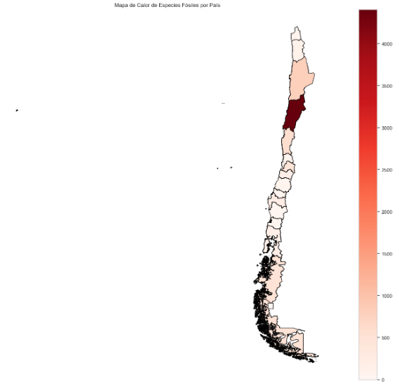
Este mapa muestra cómo ciertas regiones, como Atacama, destacan por su alta cantidad de fósiles registrados. Esto podría estar influenciado por la geología favorable y el esfuerzo paleontológico.
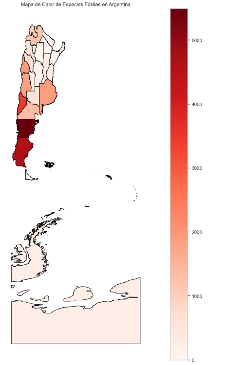
En Argentina, las provincias del sur, como Chubut y Santa Cruz, sobresalen por su riqueza fósil. Estas áreas concentran una gran cantidad de registros debido a sus características geológicas únicas.
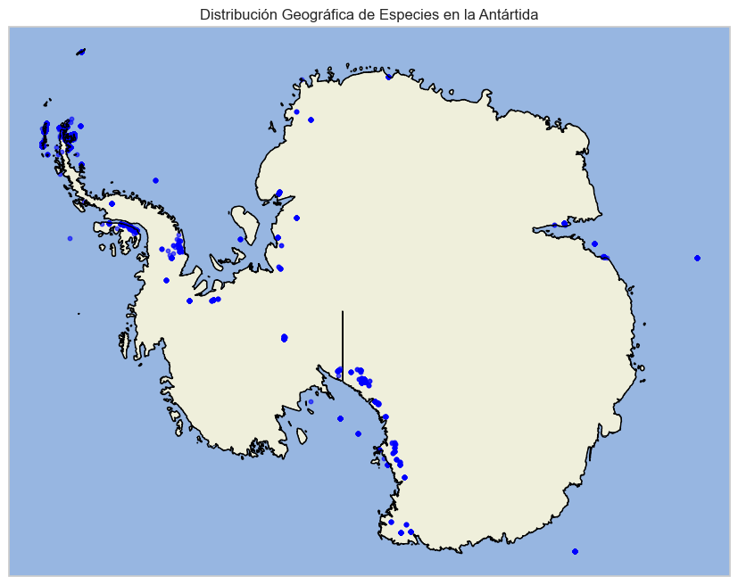
La distribución en la Antártida está más dispersa, con mayores concentraciones cerca de los campamentos científicos, reflejando el impacto del esfuerzo de muestreo.
Distribución de Fósiles por Eras Geológicas
Para un análisis más detallado, se investigaron las cinco eras geológicas con mayor cantidad de fósiles en cada región. Esto permite observar patrones temporales en la biodiversidad fósil.
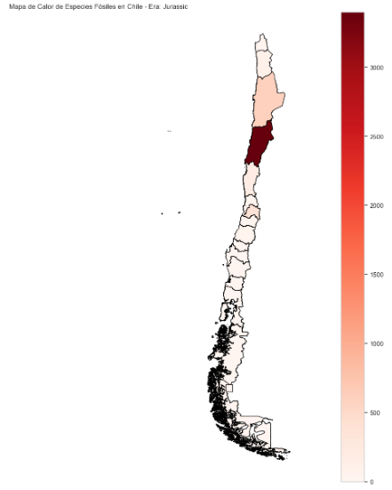
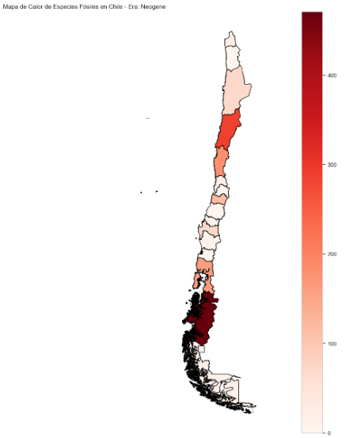
En Chile, las eras con mayor riqueza fósil incluyen períodos como el Jurassic y el Neogene, mostrando variaciones significativas en las regiones norte y sur.
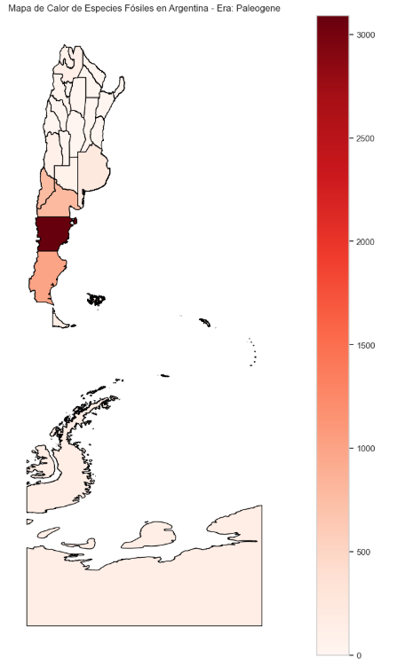
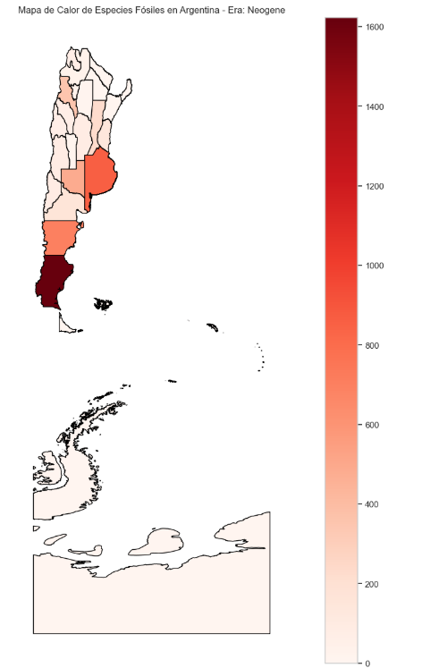
En Argentina, los fósiles están principalmente asociados a períodos como el Paleogene y el Neogene, con una fuerte concentración en Chubut y Santa Cruz.
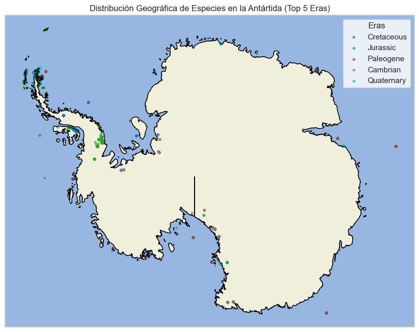
En la Antártida, las eras como el Cretaceous y el Paleogene tienen un papel importante en la preservación fósil, destacándose zonas específicas de alta concentración.
Conclusión
El análisis de la distribución fósil en estas tres regiones muestra:
- Regiones clave**: Atacama (Chile), Chubut (Argentina) y las zonas cercanas a campamentos científicos en la Antártida son los principales puntos de concentración de fósiles.
- Variación geográfica y temporal**: La riqueza fósil varía ampliamente entre regiones y épocas, lo que refleja diferencias en los procesos geológicos, climáticos y en el esfuerzo de muestreo.
- Ecosistemas antiguos**: La concentración de fósiles en ciertas eras sugiere ecosistemas que, en su tiempo, ofrecieron condiciones particularmente favorables para la vida y la preservación.
Esta distribución geográfica y temporal resalta la complejidad de la historia evolutiva en el hemisferio sur y cómo las condiciones locales han influido en los patrones fósiles que observamos hoy.
Explorando la Conexión Fósil entre las Costas de Chile y Argentina
Introducción
Las costas de Chile y Argentina han sido testigos de una rica biodiversidad fósil, influenciada por sus entornos geográficos y climáticos únicos. Este análisis busca identificar similitudes y diferencias en las especies fósiles costeras de ambos países, utilizando el índice de Jaccard para medir el grado de similitud y explorando los factores que han moldeado estas diferencias
Diversidad y Similitudes de Especies Fósiles
Diversidad Regional
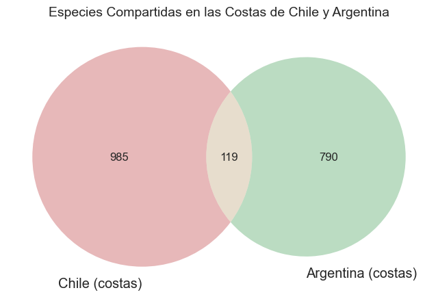
- Chile presenta **985 especies únicas** en sus costas, mientras que Argentina registra **790 especies únicas**. Esto refleja una diversidad biológica significativa en ambas regiones, con una ligera ventaja en los registros fósiles chilenos.
- Solo **119 especies** son comunes entre ambas costas, lo que sugiere que, a pesar de la cercanía geográfica, los ecosistemas costeros tuvieron trayectorias evolutivas distintas.
Diversidad por Era Geológica
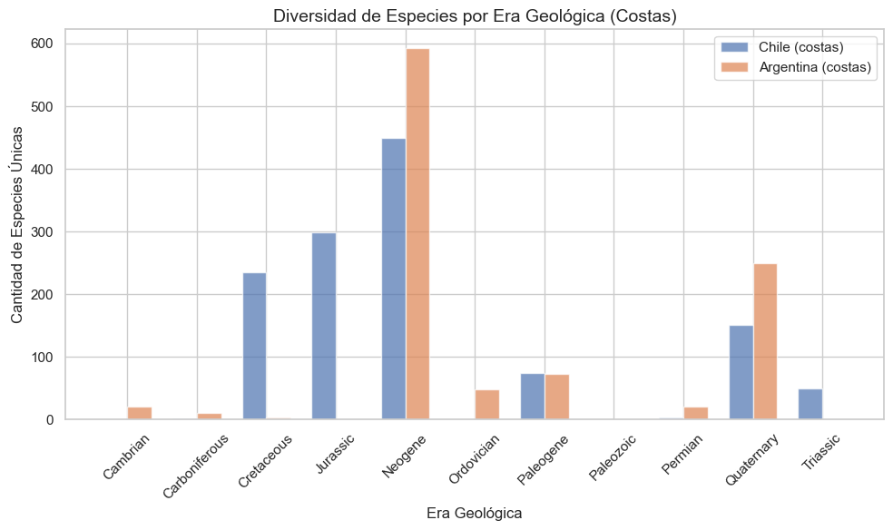
- Las eras más ricas en diversidad de especies fósiles en chile son el Neógeno (450 especies) y el Jurásico (299 especies).
- En argentina el Neógeno es la era dominante en diversidad con 593 especies, seguido por el Cuaternario con 249 especies.
En general, ambas regiones tienen una diversidad fósil más rica en el Neógeno, lo que podría indicar condiciones climáticas y ecológicas similares durante esta era que favorecieron una mayor biodiversidad.
También destaca la importancia del Neógeno como un período clave para la biodiversidad fósil en Sudamérica.
Conclusión
- El índice de Jaccard confirma una similitud biológica moderada, evidenciando que la mayoría de las especies fósiles son exclusivas de cada región. Esto se debe, en gran parte, a diferencias en factores como el clima, el tipo de ambiente y la separación geográfica por la Cordillera de los Andes.
- La cordillera de los Andes actúa como una barrera natural que dificulta la migración de especies entre ambas costas, contribuyendo a las diferencias observadas
- Las costas chilenas, influenciadas por el Océano Pacífico, presentan condiciones distintas a las argentinas, bañadas por el Océano Atlántico. Esto genera entornos paleoambientales únicos para cada región.
La comparación entre las costas de Chile y Argentina revela ecosistemas costeros evolutivamente independientes, con características únicas y solo algunas similitudes. Este análisis destaca cómo factores geográficos, climáticos y tectónicos han moldeado la biodiversidad fósil de ambas regiones, proporcionando una visión más completa de la historia natural de Sudamérica.
Hábitos Alimenticios y la Estructura Ecológica de las Especies Fósiles en Chile
Visualización Geográfica por tipo de alimentación
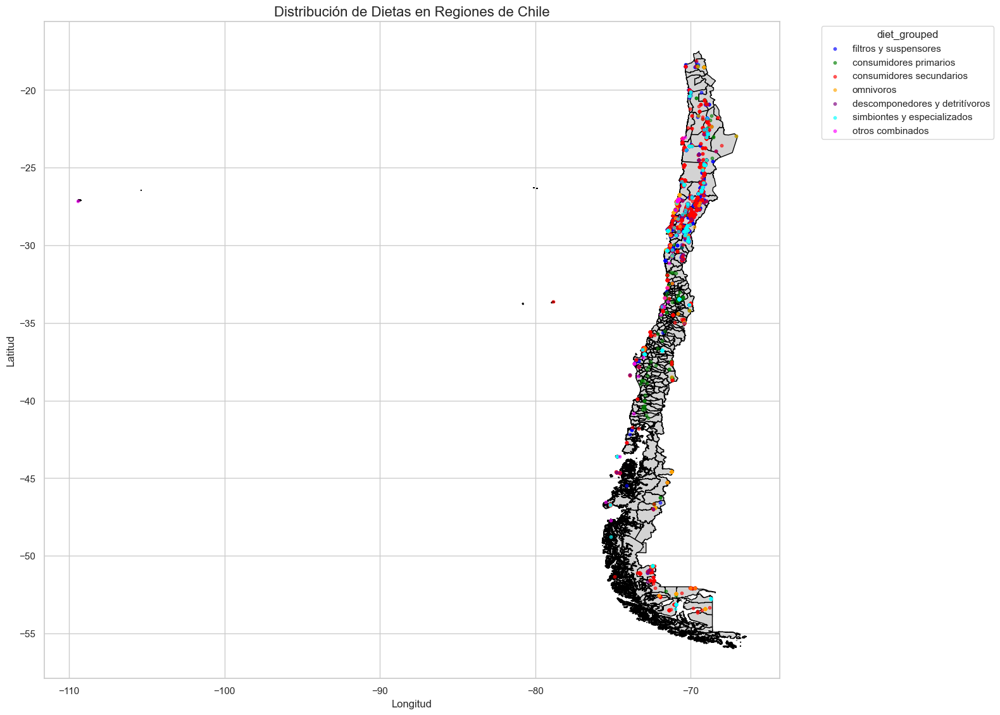
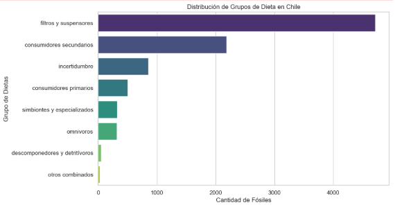
El análisis inicia con una visualización geográfica de los fósiles, revelando que las regiones costeras presentan una mayor concentración de restos fósiles. Este fenómeno se puede atribuir a la presencia de depósitos sedimentarios marinos, que favorecen la fosilización. En contraste, las zonas interiores muestran una menor densidad de fósiles, probablemente debido a condiciones geológicas menos propicias.
Además, se observa una notable cantidad de datos en la región de Atacama. En el centro de Chile, hay un aumento de consumidores primarios (representados en color verde), mientras que en el sur se identifican más consumidores secundarios y omnívoros. Esto podría sugerir la existencia de un ecosistema más complejo en el pasado.
Zonas Vacías y Factores Geológicos
El análisis también revela la ausencia de fósiles en ciertas regiones del norte de Chile. Esto podría deberse a la aridez extrema, que dificulta la
preservación, o a una falta de campañas paleontológicas en áreas de difícil acceso. Por otro lado, las regiones con mayor diversidad de fósiles parecen
estar asociadas con depósitos sedimentarios ricos y condiciones climáticas históricamente favorables para la vida.
Graficando Atacama (Region con mas fosiles de Chile)
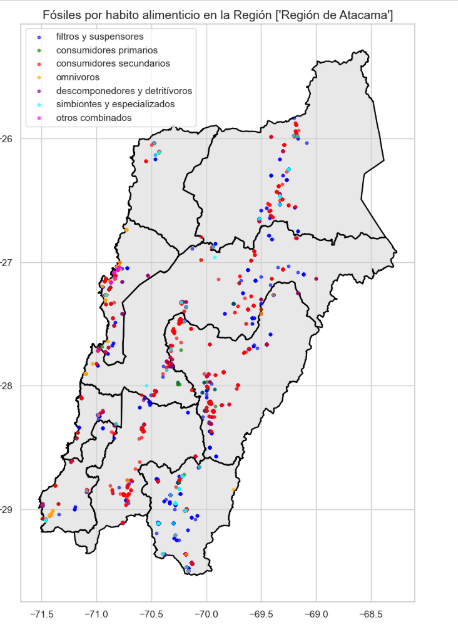
En nuestro análisis, notamos una clara dominancia de fósiles de consumidores secundarios (carnívoros), junto con una gran cantidad de fósiles de filtradores y suspensores. En las costas, se observa una mayor variedad de especies, incluyendo un mayor número de omnívoros.
Como grupo, también hemos identificado que los fósiles tienden a distribuirse de forma lineal a lo largo de la región, destacando una notable presencia de fósiles acuáticos, especialmente aquellos que se alimentan por suspensión.
Comentamos que esta distribución puede atribuirse a varios factores, como rutas de exploración ya definidas (como carreteras o ríos), condiciones específicas que favorecen la conservación de fósiles, o características territoriales propias de cada era.
Fósiles en Atacama: Un Caso Particular
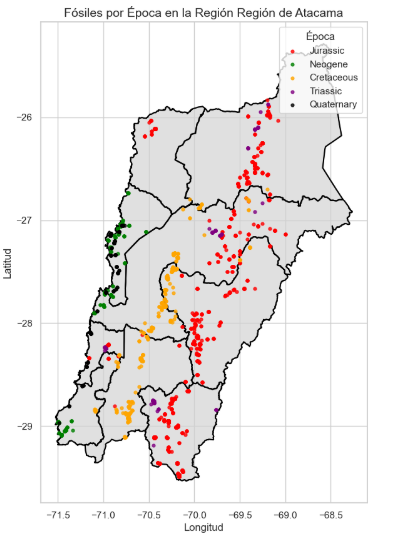
Graficamos la distribución de los fósiles en las cinco principales eras geológicas, y observamos que efectivamente hay una relación entre las distribuciones y el tipo de territorio específico de cada era.
Esto se debe a que durante el Jurásico y el Cretácico, gran parte de lo que hoy es Atacama estuvo cubierta por mares someros, lo que explica la abundancia de fósiles marinos y su distribución en la región.
Clustering de Dietas con K-means
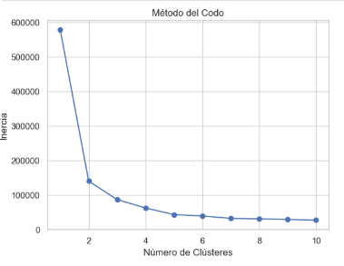
Para entender mejor los ecosistemas del pasado, se aplicó un análisis de clustering por la agrupacion de tipos de dietas (Carnívoros, Hebívoros, Omnívoros).
Como grupo tomamos la decicion de usar 3 clusters, basándonos en el metodo del codo.
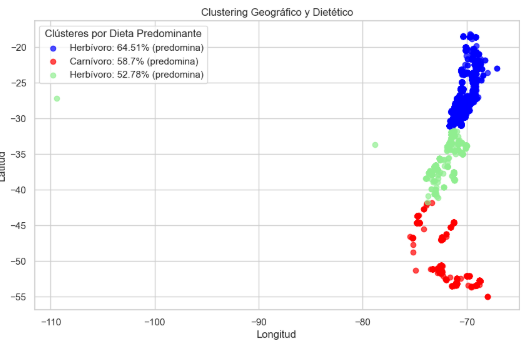
Los resultados del clustering nos mostro detalles como:
-
Clúster 0: Este clúster indica que en la zona norte de Chile predominan los fósiles herbívoros, representando un 64.51% del total, junto con un 33% de fósiles carnívoros. Esta distribución sugiere un ecosistema donde los herbívoros tenían un papel significativo en la cadena alimentaria.
-
Clúster 1: En la zona centro-sur de Chile, observamos que los fósiles carnívoros son predominantes, alcanzando un 58.7%. Esto podría reflejar un entorno más competitivo, donde los carnívoros se encontraban en mayor número, posiblemente debido a la disponibilidad de presas.
-
Clúster 2: En la zona centro de Chile, los fósiles herbívoros vuelven a ser predominantes, con un 52.78%. Esta tendencia sugiere que, a pesar de las variaciones regionales, los herbívoros continúan desempeñando un papel crucial en el ecosistema de esta área.
Luego los carnívoros en la zona tienen una presencia significativa (45.57%), indicando un ecosistema con interacciones complejas.
En general, los omnívoros aparecen en menor proporción en los tres clústeres. Esto podría explicarse por varios factores, como la especialización de nichos
ecológicos, sesgos en el registro fósil o limitaciones en la clasificación de dietas. Además, las condiciones ambientales específicas de Chile probablemente
favorecieron la prevalencia de herbívoros y carnívoros, dejando un menor espacio para especies generalistas como los omnívoros.
Conclusión
Este análisis destaca la importancia de las regiones costeras de Chile como reservorios de fósiles, especialmente de ambientes marinos por lo tanto una alimentacion correspondiente. Las distribuciones
geográficas y dietéticas de los fósiles permiten reconstruir ecosistemas antiguos, mostrando la interacción entre diferentes grupos tróficos y los factores
ambientales que moldearon estos ecosistemas. La riqueza de los fósiles en el sur y las particularidades de Atacama proporcionan una visión valiosa sobre la
diversidad biológica y los cambios climáticos y geológicos a lo largo del tiempo.